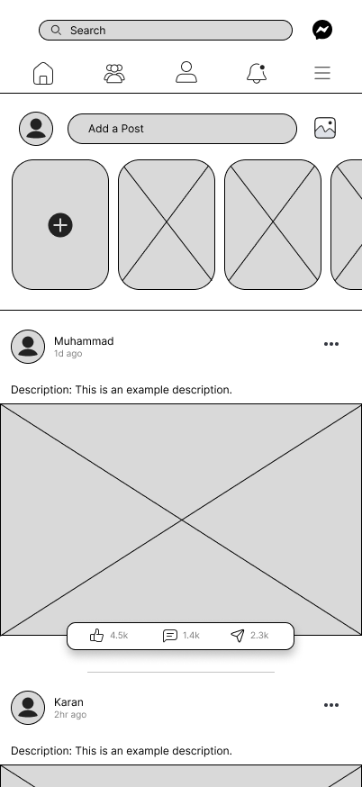
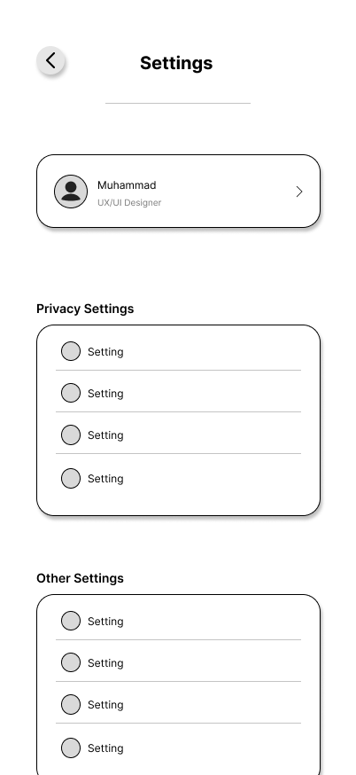
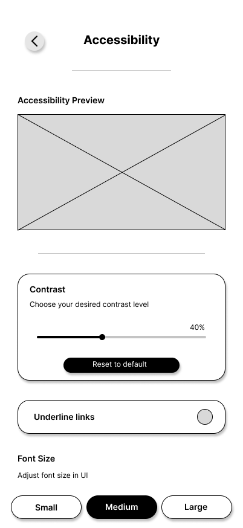
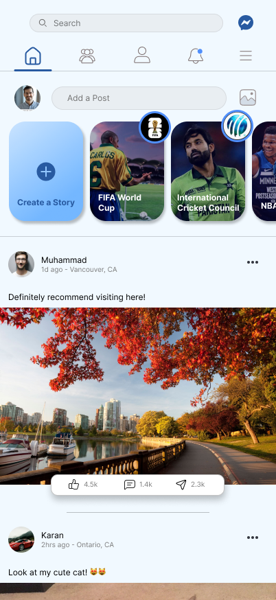
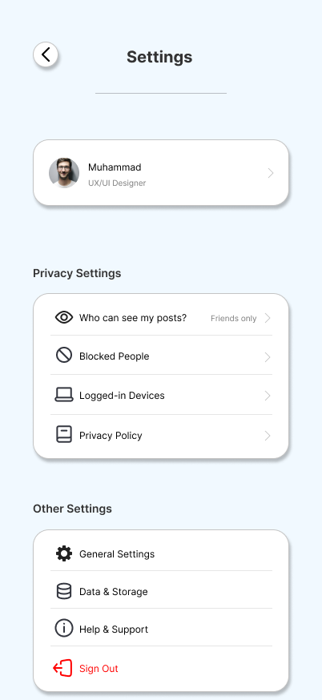
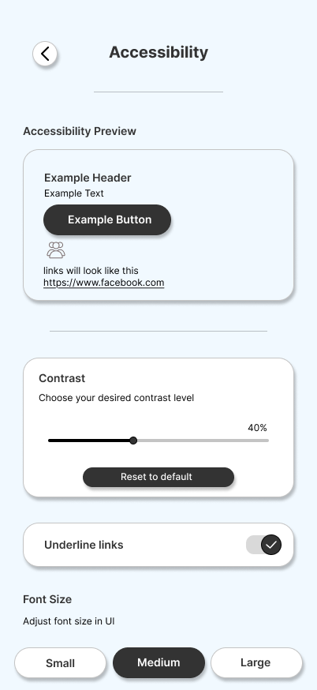
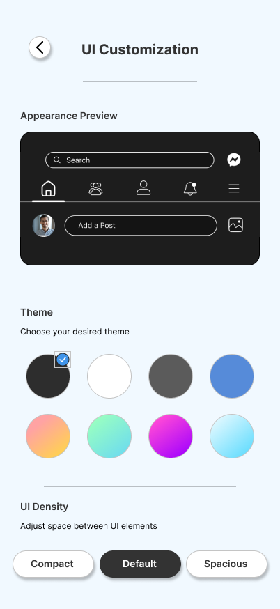

Redesigning Facebook for Clarity and Accessibility
A team UX case study that used psychology-informed design to fix Facebook's cluttered interface, buried settings and accessibility gaps.
Project overview
Facebook has more than 2.9 billion monthly active users, but its interface is often described as cluttered and hard to navigate, especially for people who are new to it, older, or using assistive technology. Our team's brief was to apply psychological design principles, including Norman's usability heuristics, color and emotion, and accessibility standards, to redesign the platform around real user needs rather than assumptions.
We picked Facebook because its scale and range of features (news feed, groups, messaging, marketplace, ads) let us study friction across many kinds of user flows, and because its accessibility and clutter complaints are well documented, which gave us a concrete problem to design against.
User research & discovery
We ran quantitative research first, to see the shape of the problem across a large user base, then qualitative research, to understand the feelings behind the numbers.
Quantitative: surveys and usage data
We surveyed over 200 Facebook users across age groups on satisfaction, wants and frustrations, and cross-checked that against Facebook's public usage reports and third-party analytics on time spent in the News Feed, Groups and Events.
Qualitative: interviews and observation
We ran 15 semi-structured interviews with older adults, younger users and people with disabilities, and observed people using Facebook directly to see where they hesitated or got stuck.
| Theme | What users told us |
|---|---|
| Navigation | 58% found navigation difficult; adults 55+ were 40% more likely to struggle finding privacy settings or notifications. |
| Design | Most younger users saw the interface as dated next to newer apps; close to half of users with disabilities called accessibility options inadequate. |
| Usability | 70% found the News Feed cluttered and overwhelming; 50% wanted more control to customize what they see. |
Interviews added the texture behind those numbers: older adults described feeling intimidated by the interface and struggled to adjust privacy settings or track which posts were from friends. Younger users wanted more feed customization and felt the design lagged behind apps like Instagram. Users with visual impairments ran into missing image alt text and low color contrast, which broke their experience with screen readers.
Problem statement
Synthesizing the research gave us three linked problem statements:
- Older users are overwhelmed by the interface's complexity and cannot reliably locate settings or privacy features.
- Younger users see the design as dated and slower to use than newer platforms.
- Users with disabilities face real accessibility barriers, including poor color contrast and no screen-reader support for images.
Design critique
We evaluated the existing design against four lenses, and each surfaced concrete, fixable problems:
- Norman's principles: weak visibility of system status (no clear upload progress), icon metaphors that don't match users' mental models, and inconsistent layouts between mobile and desktop.
- Color and emotion: near-total reliance on one blue, with little use of color to guide emotion or draw attention to actions.
- Accessibility: small low-contrast text, missing alt text on images, and no visible keyboard navigation path.
- Defensive design: destructive actions like deleting a post or comment had no confirmation step, and failed actions (like a failed upload) gave vague, unhelpful errors.
Aryan, 45, retiree
Goals: stay in touch with family and friends, plan events, share photos.
Pain points: small text, a busy interface, and hard-to-find privacy controls.
Needs: a simpler layout, larger text, and clearer privacy settings.
Sujal, 23, college student
Goals: keep up with events, join interest groups, message friends, and control the feed.
Pain points: a dated interface, an irrelevant feed and too many ads.
Needs: a modern look, more feed control, and lighter ad load.
Karan, 32, visually impaired
Goals: meet with friends, join groups, stay informed, access content through a screen reader.
Pain points: poor contrast, missing alt text, and non-standard navigation.
Needs: high-contrast mode, alt text on all media, and reliable keyboard navigation.
Ideation
We ran the redesign through the Design Thinking cycle: empathize, define, ideate, prototype and test. The empathize and define stages fed directly from the research and problem statements above. To ideate, we brainstormed against three "how might we" questions:
- How might we simplify Facebook's interface for older users, without removing the features they still want?
- How might we make the feed feel less crowded without reducing it to nothing?
- How might we make Facebook genuinely usable for people with visual impairments?
That produced four directions we chose to prototype: a simplified, "light" interface option with larger fonts; a smarter, more personal news feed; stronger accessibility support (contrast, screen readers); and a more modern, interactive visual style.
Prototyping
We built four low-fidelity wireframes first, then refined them into high-fidelity prototypes so we had something realistic enough to usability test.



The high-fidelity prototypes carried these layouts into a soft blue palette with rounded elements and subtle shadows, aimed at feeling calmer and more modern than the original.




Usability testing & outcomes
We tested the prototype against the real Facebook interface with people from our three target groups: young adults (18 to 35), older adults (50+) and users who rely on assistive technology such as screen readers and keyboard navigation. Each person worked through four tasks: find privacy settings, adjust the content feed and remove an ad type, post an image with alt text, and turn on high-contrast mode.
| Group | What worked | What still needed work |
|---|---|---|
| Young adults | Liked the personalized feed and the faster, less cluttered interface. | Wanted finer control over ad frequency and a stronger search tool. |
| Older adults | Found the cleaner homepage and Privacy Dashboard easier to use, thanks to plain language and clear icons. | Small text was still hard to read; adding alt text to photos needed a guided walkthrough. |
| Assistive-tech users | Keyboard navigation felt intuitive, and high-contrast mode clearly improved readability. | Error messages during form entry were unclear, and long comment threads were hard to navigate. |
We used that feedback to make five concrete refinements: a more advanced ad filter, an adjustable font-size setting, a guided alt-text tutorial, clearer and more actionable error messages, and a comment-thread navigation shortcut.
Final solution
The final design keeps Facebook's core functions but reorganizes them around five changes: a simplified, personalizable homepage; a single Privacy Dashboard that consolidates settings that used to be scattered across menus; accessibility features including keyboard shortcuts, high-contrast mode, alt text and font scaling; more user control over ad frequency and type; and a shorter interaction flow for posting and commenting.
Reflection & lessons learned
Working through the full Design Thinking cycle showed us how much the qualitative interviews changed our thinking versus the survey data alone: the numbers told us where the problems were, but the interviews told us why they mattered to people. Staying anchored to the three personas kept us from designing for an "average user" who doesn't really exist.
Looking forward, the team identified a few directions worth exploring further: AI-assisted content personalization, richer video interaction, and features that support collaboration between users, alongside continued usability testing as the design evolves.
Design brief
Goals and target audience
Make Facebook intuitive, emotionally engaging and accessible across its full range of users: teenagers, young adults, middle-aged users, seniors, and people with disabilities.
Rationale for key UI decisions
We simplified the homepage and gave users control over what appears in it, to cut cognitive load. We consolidated privacy and security into one Privacy Dashboard so users could find and trust their own settings. We moved away from a single dominant blue toward a palette with clearer emotional accents, so key actions (like sharing or reacting) stand out from passive, informational content.
Accessibility considerations
High-contrast mode, mandatory alt text prompts on image uploads, full keyboard navigation with visible shortcuts, and adjustable font sizing, aimed at WCAG-aligned support for users with visual and motor impairments.
Key lesson learned
An empathetic, iterative process, moving through real research, prototyping and testing rather than assumptions, produced a design that felt more emotionally resonant to the people who tested it, not just more usable on paper.